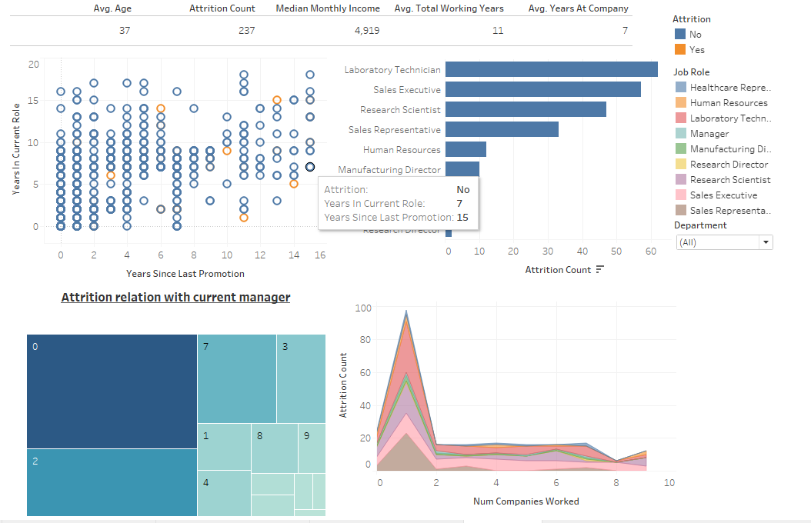
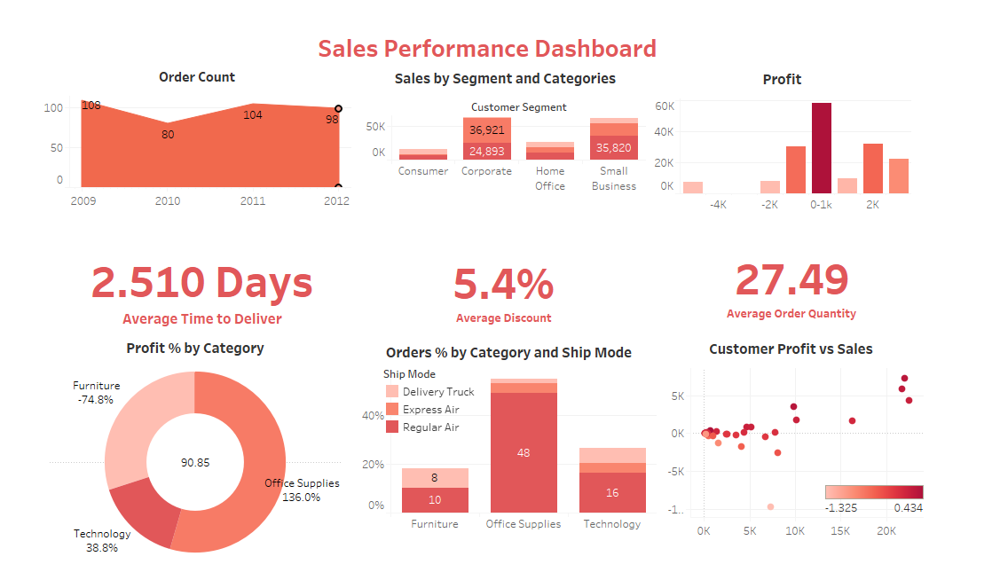

This is a big data Netflix Project that have details of Tv shows and Movies, Title, Director , Cast, Country, Release Date, Rating, Duration, Type and Description. Excericise of project are Removing duplicate values, Finding null values on heat map, Bar Graph representationn of Number of movies and Tv shows per year, Number of Movies and TV shows, Top 10 directors on Netflix, Different kind of ratings given by Netflix amnd at last Sorting and Filtering dataset.

This project is based on Udemy Course Data that includes details of Course id, Course Title, Paid or not, Price, Number of Subscribers, Number of Reviews and Number of Lectures, Level, Content Duration, Published Timestamp and Subject Name. There are 4 subjects courses i.e., Musical Instrument, Business Finance, Graphic Development and Web Development. Details of Free and Paid Courses .

India Census 2011 Dataset Project icludes district wise data of Total Population, Male Population, Female Population, Literate Population, Total Workers, Male Workers, Female Workers, Cultural Workers, Agricultural Workers, Household Workers, Hindu, Muslims, Christians, Sikhs, Buddhists, Jains, Secondary Educate, Higher Educate, Graduate Educate, Age Group 0-29, Age Group 30-49, Age Group 50. Furthermore some questions are also answered are How to set index as column, How to add suffix and prefix.

This is a project based on London Housing Database, that includes details of Date, Area, Average Price, Code, Houses_sold, and No. of Crimes. Libraries used in the project are Pandas, Seaborn and Matplotlib. Excercises that are done in the projects are Conversion of datatypes, Adding and Removing Columns, Filtering, Maximum and Minimum and Value Counts.

This project is The Big Data Analysis of Global Covid 19 Pandemic with track of Confirmed Cases, Deaths and Recovered Cases. I have worked with some excercise questions on this project like: Show the number of Deaths, Confirmed cases and Recovered cases in each region, Remove all the records where Confirmed cases are less than 10, In which region minimum number of death were recorded, How many Confirmed cases, Deaths and Recovered cases were reported from India till 29 April,2020 and at last Sorting the number of Confirmed Cases in Ascending order

This is traffic checking related data from 2005, that have columns of stopping date and stopping time, name of the country. Driver's details like his gender, Birth year, Age, and race. Violation and checking details like Search type, Outcome, Arrested or not, and Drugs related. I did Data Cleaning, Filtering and Value Counts, Group by functions. And at last Comparison of Age Distrivution of each Violation
This is a small dataset of Cars, It have details like Make, Model, Type, Origin, MSRP, Engine, Horsepower, Cylinder, Invoice,Weight and Length. In this project, First I did Data Cleaning, After tha Counting values excercise, Furthermore Filtering, Removing Unwanted Records, and Lambda function application on the dataset

This is a Weather Condition Analysis Project which have details like Temperature, Humidity, Wind Speed, Visibility, etc. In this analysis, I find out answers to some questions such as: When weather is exactly clear?, When windspeed was exactly 4km/hr?. Furthermore I find Mean of Visibility, Standard Deviation of Pressure, Variance of Humidity. And excercises that helps in understanding codings of Filtering and Logical Operators(&,|).

This is a very basic level project, that includes Data Cleaning and other basic Python codings. In this project, I coded for Adding columns to database, Adding column at specific index, Deleting column, Sorting and Filtering Column, Pivot and Scatter Charts, etc. This project helps in understanding how to prepare any raw data for analysis by cleaning it and sorting it according to the use.

In this project, I take dataset of 7000 movies with details of Budget, Company, Country, Director, Genre, Gross, Name, Rating, Released, Runtime, Score, Star, Votes, Writer and Year. The objective of this project to predict and check the correlation of different factors with Gross. I take two factors, i.e., Budget and Company and checked their correlation with the Gross of movies. As conclusion, the Budget and Gross shares positive correlatiion, whereas Company and Gross shares negative one.
Covid 19 Global Dashboard
in Tableau
This project shows Covid 19 global data. This dashboard shows Cases by days, Cases by Countries and Confirmed and Deaths global map. This is the interactive dashboard with the filter of countries and date. We can find out top countries with the higehst rate of covid new cases and deaths with just a click. We can conclude that US, Spain, Italy, France and Germany are the top 5 countries with the highest cases.
Cryptocurrency Dashboard
in Tableau
In this project, I took data of Cryptocurrency that includes Opening Price, Closing Price, Highest and Lowest Price of three hottest crypto in the world, i.e., Bitcoin, Etherium and Dogecoin. For the KPIs, I find Average HIgh, Low, Open and Close of all three coins. Furthermore, Line charts are prepared for tracing High of all the coins. The conclusion shows that Bitcoin and Etherium are the two most consistent and trustworthy coins. In last, I created a area chart, that shows opening records of Bitcoin and Etherium
IMDB Dashboard
in Tableau

In this project, I took data of IMDB ratings from 1935 to 2016 to find and analyse KPIs. KPIs includes Average Duration of movies, Gross, Average IMDB Score, and No. of movies. Furthermore, I analysed Gross Revenue and Duration with Rating impact, No. of movies per year, Genres of movies by Rating, and Favourite actors by Rating and Gross. It is simple and short dashboard with 4 charts. Also, I connected all the charts with a filter of "Director Name" that helps to find the record of any particular director.
Human Resource Dashboard
in Tableau

This project basically throws light on Attrition and its relation with various other factors, such as last promotion, working span, relation with manager, Working time in one role, etc. KPIs for this analysis were Average Age, Attrition Count, Median Monthly Income, Avg Total Working Years, and Avg Years at Company. Further, I tried to visualized the relations, The first chart shows Attrition with respect to Years since last promotion and Years in present company, Second chart shows which department have highest rate of attrition, Third chart shows Attrition with respect to relation with current manager and the last chart shows Attrition count and Number of companies worked in.
San Francisco Airport Dashboard
in Tableau

In this project, I visualized the data of San Francisco Airport of March,2020. This includes No. of Flights, No. of Flights by Days, The Most Popular Day. Then I have attached the map that shows the route map of all the flights from San Francisco Airport with Top 3 routes and Top 3 Average Distance From San Francisco Airport. The analysis came to conclusion that 88,532 flights flew in March, Most flights in single day is 3,295 on March 6,2020.
Sales Report Static Dashboard
in Tableau

In this project, I analysed the sales report of a company with the data of four years i.e. from 2009 to 2012. It includes line chart, donut chart and bar graphs. This dashboard inlcudes KPIs, Order Count, Sales by Segment and Categories, Profit, Proit % by Categories, Order % by Categories and Ship Mode and Customer Profit vs Sales. According to the data, in 2009 order count was at its peak, Corporate segment contribute highest in sales, 2.510 days is the average time to deliver, 5.4% is the average discount and 27.49 is the average order quantity.
Sales Report Interactive Dashboard
in Tableau

In this project, I analysed the sales report of a company with the data of three years i.e. from 2018 to 2020. It is an interactive dashboard that includes line chart and bar graphs. This dashboard inlcudes Total Revenue, Sales Qty., Revenue by Market, Sales by Market, Revenue by Year and Top 5 customers. According to the data, Delhi NCR is the biggest market for the company in terms of both, Sales and Revenue, Electicalsara Store is the top customer of the company by contributing highest revenue and the revenue of the company is highest in 2018 January.

In this project, I analysed the dataset of Human Resource of a company with three offices in three different state. The analysis is based on the details such as Age, Gender, Annual salary, Location, Rating, Tenure in Office,etc. After the analysis, I got the answers to the questionlike- Average salary according to gender, location and departments, Average tenure according to gender, department and location, Numbers of employees at different location and department according to age and average age of people working in the company.
In this project, I analysed the dataset of startups which got funded from 2015 to 2020. This dataset includes Different kinds of Investment, the Amount, the Investor and other details. From the analysis, I got answers to the questions like- Companies who got funded with highest amount in each year, Number of times these companies got funded in span of 6 years, The year in which these companies got maximum funding, and the Kind of Investments through which top companies got funded.

In this project, I analysed the dataset of India daily Covid-19 track record of daily cases, daily deaths and also of daily vaccination drives. After the analysis, I got the answers of question like- Rate of new cases, Rate of new deaths, Rate of vaccinations, Which month have highest cases and death numbers.